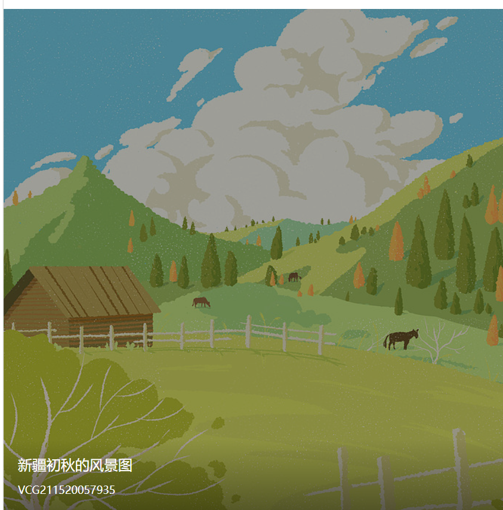
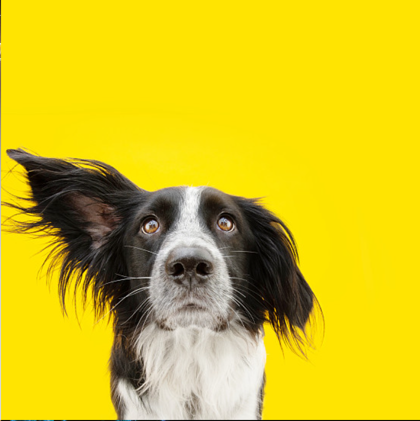

四个参数，一条过渡
写过 transition: transform .4s ease .1s
就够了，但只有真正拖过时长、延迟和缓动曲线，才知道那条"滑动"到底是怎么被算出来的。
下面 6 个板块，从对比、拆解、实验到踩坑，全部可以动手点。
先看差别：有过渡和没过渡
把鼠标移到两条进度条上
两条进度条初始宽度都是 16%，悬停时都变成 100%。
左边没有写 transition，宽度瞬间跳过去；右边写了 transition: width .85s，
宽度在 0.85 秒内连续变化。眼睛看到的"顺滑"，本质就是中间被补出了几十个中间值。
宽度一次性跳到终点，视觉上只是一次闪烁。
中间值由浏览器补齐，鼠标移出时也会平滑地退回去。
transition 不产生动画，它只是规定"当某个属性变的时候，慢一点变"。
所以必须有一个状态变化（:hover、加 class、JS 改样式）来触发它。
语法拆开看：四个位置各管什么
简写顺序不能乱.wan_card {
transition: transform .4s ease .1s;
/* 属性 时长 缓动曲线 延迟 */
}| 子属性 | 作用 | 默认值 | 常见取值 |
|---|---|---|---|
| transition-property | 对哪些属性做过渡 | all | transform / opacity / width / all |
| transition-duration | 从开始到结束用多久 | 0s（等于没有） | .2s / 400ms / 1s |
| transition-timing-function | 中间值的速度曲线 | ease | linear / ease-in / ease-out / cubic-bezier() |
| transition-delay | 推迟多久才开始 | 0s | .1s / 1s |
transform、opacity。
display、height: auto 这类没有中间态的，写了也不生效。
动手实验：改三个参数，看同一个方块怎么变
参数修改后自动复位
选一个要变化的属性，拖动时长和延迟，再换一条缓动曲线，点「开始过渡」。
右边的代码是当前参数对应的等价写法，下面还会实时显示 transitionend 事件。
- 过渡结束后，这里会出现一条记录。
缓动曲线赛跑：同样的距离，不同的性格
1.5s 同时出发
五颗球同时出发、同时到达，唯一的区别是 transition-timing-function。
曲线上每个点的斜率就是那一瞬间的速度：斜率大 = 跑得快。
回弹那条用了 cubic-bezier(.68,-.55,.27,1.55)，速度会先"倒车"再冲过头。
匀速
默认
慢起
慢停
overshoot
作业升级版：九张卡片 hover 放大
原版只有 scale(1.08)
原来的练习只写了一行 .card:hover { transform: scale(1.08); }，
加上 transition 以后放大才是"长出来"的，不是"跳出来"的。
这里再补了两层：图片自己缓慢微缩放，底部说明从遮罩里上浮。
把右上角的开关打开，能立刻对比出没有过渡的粗糙感。
 作品 02hover 放大
作品 02hover 放大

作品 03hover 放大
作品 04hover 放大 作品 05hover 放大 作品 06hover 放大
作品 07hover 放大
作品 08hover 放大
作品 09hover 放大
z-index；
放大倍数别超过 1.1，否则相邻卡片的边会被切得很难看。
六个必须知道的坑
踩过一次就记住了
写进 :hover 里，鼠标移出时规则失效，过渡跟着消失，元素会"啪"地弹回去。
正确做法是写在常态选择器上，hover 只负责改值。
display: none → block 没有中间态。常用的替代是
opacity + visibility，或者配合 height 从 0 到定值。
auto 是个"算不出来的长度"。要么写成固定高度，要么用
max-height 从 0 到足够大的值，要么交给 grid-template-rows: 0fr → 1fr。
改 left、width 会触发重排，掉帧明显。
位移和缩放优先用 transform，显隐和淡入淡出优先用 opacity，它们只走合成层。
起始 → 结束，一条直线走完。想要中间变色、来回摆动、循环播放，
transition 做不到，得用 @keyframes（下一页 10-1）。
同时过渡三个属性，事件就派发三次。判断时用
e.propertyName 过滤，别在回调里重复执行同一段逻辑。
transition: transform .3s ease, opacity .6s linear .1s;
能分别控制每个属性，互不干扰。